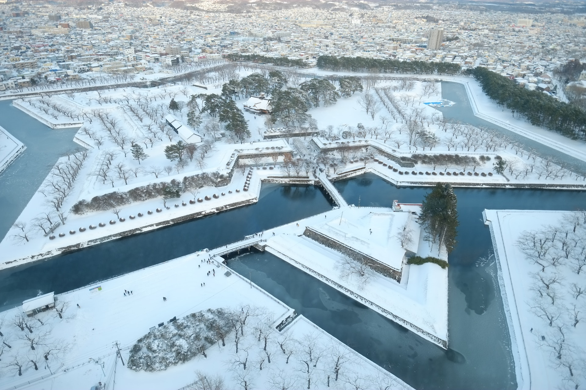
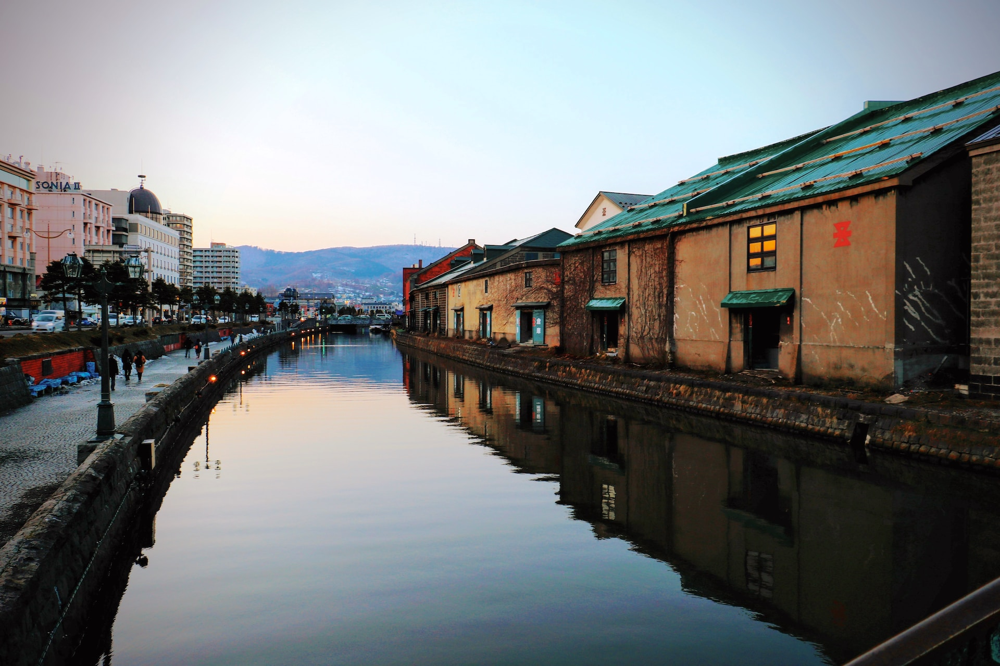
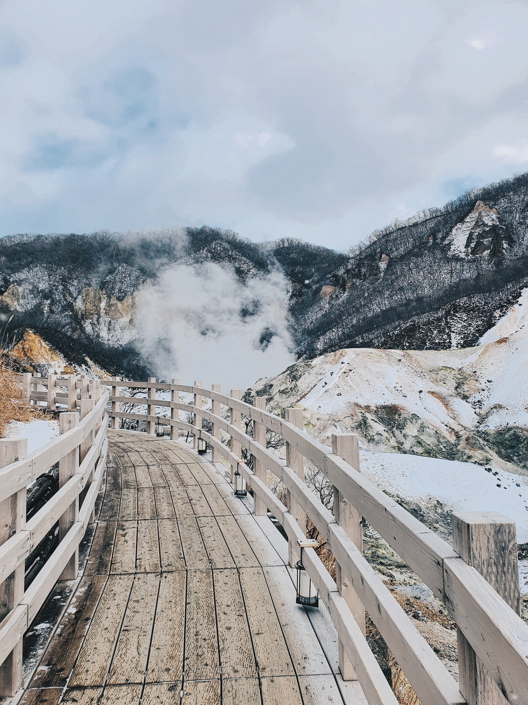
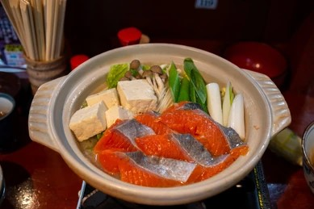
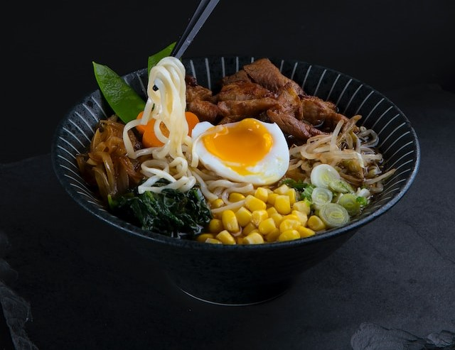
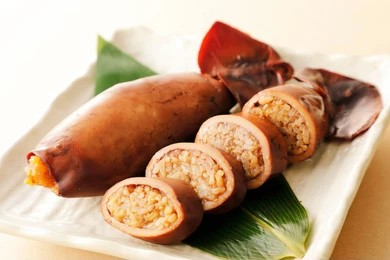

Hokkaido adalah pulau terbesar di Jepang, yang terletak di
ujung utara kepulauan Jepang. Sejarah Hokkaido dimulai dengan
kedatangan suku Ainu, penduduk asli pulau ini, sekitar 20.000 tahun
yang lalu. Pada abad ke-17, pulau ini mulai dijajah oleh Jepang, dan
pada abad ke-19, Hokkaido dibuka lebih luas kepada pemukim Jepang
sebagai bagian dari upaya modernisasi dan pengembangan ekonomi.
Hokkaido juga memiliki sejarah yang kaya dalam industri pertanian,
pertambangan, dan perikanan. Selain itu, pulau ini menjadi pusat
migrasi selama beberapa dekade terakhir, menarik penduduk dari
seluruh Jepang dan luar negeri. Hokkaido sekarang menjadi salah satu
destinasi wisata populer di Jepang dengan alam yang indah, termasuk
pegunungan, danau, serta sumber air panas yang terkenal, serta
kebudayaan Ainu yang kaya dan unik yang masih bertahan hingga hari
ini.
Geografis

Pulau Hokkaido terletak di ujung utara Jepang, dekat Rusia, dan
memiliki garis pantai di Laut Jepang, Laut Okhotsk, dan Samudra
Pasifik. Di tengah pulau ini terdapat sejumlah gunung dan dataran
tinggi vulkanik, dan terdapat juga dataran pantai di segala arah.
Kota-kota besarnya meliputi Sapporo dan Asahikawa di wilayah tengah
dan pelabuhan Hakodate yang menghadap Honshū. Yurisdiksi pemerintah
Hokkaido mencakup beberapa pulau kecil, termasuk Pulau Rishiri,
Pulau Okushiri, dan Pulau Rebun. Menurut perhitungan Jepang,
Hokkaido juga menggabungkan beberapa Kepulauan Kuril karena status
prefektur Hokkaido dilambangkan dengan nama do.
Sehingga jarang disebut sebagai Prefektur Hokkaido, kecuali
bila diperlukan untuk membedakan entitas pemerintah dari Pulaunya.
Pulau ini menempati urutan ke-21 di dunia berdasarkan luas
wilayahnya. Pulau ini 3,6% lebih kecil dari pulau Irlandia sedangkan
Hispaniola 6,1% lebih kecil dari Hokkaido. Menurut jumlah penduduk,
pulau hokkaido menempati peringkat ke-20 berada di antara Irlandia
dan Sisilia. Populasi Hokkaido adalah 4,7% lebih rendah dari pulau
Irlandia, dan Sisilia 12% lebih rendah dari Hokkaido.
Wisata
Salah satu alasan Hokkaido banyak dikenal adalah karena keindahan
alamnya yang begitu mempesona. Panorama yang ditawarkan mampu
memukau siapa saja yang datang berkunjung. Maka tak heran jika
Hokkaido menjadi salah satu destinasi wisata populer di jepang. Jika
kamu tertarik ingin berkunjung, berikut ini adalah beberapa
rekomendasi tempat wisata terbaik yang ada di Hokkaido!
Shikisai No Oka
Tempat wisata di Hokkaido yang cocok untuk kamu kunjungi ketika
liburan musim semi adalah Shikisai No Oka. Di sini kamu bisa
melihat bunga berwarna-warna bermekaran indah. Shikisai No Oka
merupakan kebun bunga terbesar di Hokkaido. Di sini ada banyak
bunga, mulai dari tulip, pansy, lupine, bahkan ada juga bunga
lavender. Warna-warni bunga ini membuat tempat ini semakin semarak
dan indah.
Otaru Canal

Tempat wisata di Pulau Hokkaido yang tidak boleh kamu lewatkan
adalah Otaru Canal. Canal atau bendungan sepanjang 1.140 meter ini
membentang sepanjang Kota Hokkaido. Bendungan ini sudah ada sejak
tahun 1923 dan masih terawat baik sampai sekarang. Kamu bisa
datang ke bendungan ini pada akhir musim dingin yaitu bulan
Februari. Pada bulan ini kamu bisa menyaksikan festival salju
otaru yang meriah. Selain itu, kamu juga bisa naik kapal untuk
menyusuri bendungan ini.
Noboribetsu

Tempat wisata di Hokkaido yang tidak boleh kamu lewatkan adalah
Noboribetsu. Noboribetsu merupakan sub prefektur yang berada di
pegunungan. Pemandangan alam di sini sangat indah dan tidak boleh
kamu lewatkan. Salah satu tempat yang harus kamu kunjungi di sini
adalah Jigokudani Noboribetsu. Di sini kamu bisa menikmati
pemandangan kawah yang indah dari atas jalan setapak.
Kuliner
Dianugerahi alam yang melimpah, Hokkaido di bagian utara Jepang
menghasilkan banyak bahan-bahan segar berkualitas tinggi, seperti
sayuran, daging, dan seafood. Dengan berbagai resep khas setempat
yang mengubah hasil bumi ini menjadi hidangan kreatif dan lezat,
Hokkaido menempatkan dirinya sebagai destinasi wajib bagi para
pecinta kuliner. Jika kamu sedang berkunjung, jangan lupa untuk
mencicipi menu yang kami rekomendasikan berikut ini!

Ishikari Nabe
Sup yang terbuat dari rumput laut kombu yang dibumbui miso dan
dikemas dengan salmon mentah, lobak daikon, wortel, jamur
shiitake, bawang merah, tahu, dan banyak lagi. sup ini dapat
menghangatkan tubuhmu dan menyembuhkan kamu dari hawa dingin.

Ramen Hokkaido
Hokkaido memiliki berbagai macam ramen dan keragaman cita rasa
yang lahir di setiap wilayahnya. Dari sekian banyak varian yang
tersedia, Sapporo, Hakodate, dan
Asahikawa Ramen dijuluki sebagai tiga ramen utama
Hokkaido, dan sangat disukai oleh penduduk setempat.

Ikameshi
Ikameshi dibuat dari tubuh cumi-cumi yang diisi dengan nasi dan
direbus. Dibumbui dengan saus tara asin-manis sederhana dengan
bahan dasar kecap, hidangan ini memungkinkan kamu untuk
menikmati karakter setiap bahan sepenuhnya.